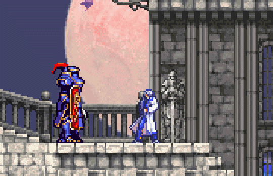
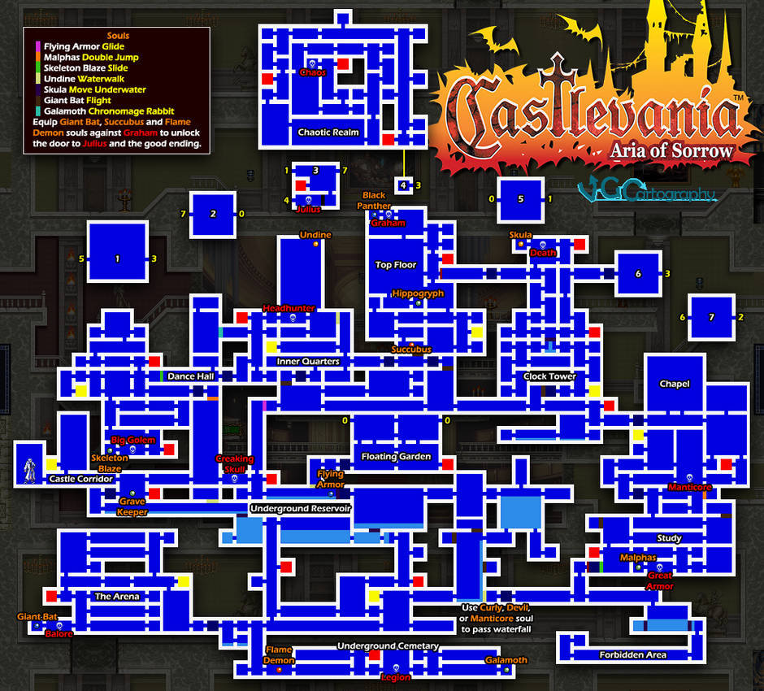

Aria of Sorrow is set in the year 2035, when Dracula has been sealed away after a battle in 1999. The plot follows the journey of Soma Cruz, a teenager granted occult power as a result of being a potential vessel of Dracula's reincarnation, as he battles dark figures that wish to inherit the undead lord's power. The game has been described as an action-adventure game with elements of role-playing games. Aria of Sorrow introduces several features to the series, such as the "Tactical Soul" system and employs a futuristic storyline in contrast to the medieval setting of other Castlevania games.
Aria of Sorrow was released in May 2003. Although it sold poorly in Japan, selling 27,000 units nearly one month after its release, it was commercially successful in the United States, with more than 158,000 units sold in the three months following its release. Aria of Sorrow received universal acclaim, with praise for its visuals, gameplay (particularly the Tactical Soul System), music, and level design. Some critics considered it the best Castlevania game since Symphony of the Night.
Producer Koji Igarashi, who led the production teams for previous Castlevania titles, led Aria of Sorrow's development.
Aria of Sorrow was unveiled at a press conference in San Francisco by executive producer Koji Igarashi on January 16, 2003. Igarashi had worked on previous Castlevania games such as Castlevania: Symphony of the Night and Castlevania: Harmony of Dissonance. Aria of Sorrow was placed in production alongside Harmony of Dissonance, resulting in both games sharing similar programming engines and gameplay elements. Aria of Sorrow's Ability souls, for example, provide the protagonist with innate abilities like the Relic items in Harmony of Dissonance. Nevertheless, Igarashi claimed he wished to try a "different route" for the series with Aria of Sorrow via placing the game in a futuristic setting. Ayami Kojima, who had previously collaborated with Igarashi on the character designs of Symphony of the Night and Harmony of Dissonance, was brought into the project. Following the "different route" motif, the character designs were made more contemporary, using modern clothing over the more medieval look of the previous Castlevania installments. In developing the game's back story, Igarashi partially based it on Nostradamus's prediction of a "big evil lord in 1999" and the 1999 solar eclipse in Eastern Europe.
One of Igarashi's prominent concerns during development was addressing the criticism expressed concerning Harmony of Dissonance. Igarashi noted that the music in Harmony of Dissonance had not been well received and Michiru Yamane, who had previously worked on the acclaimed music for Symphony of the Night, was hired in order to compose for Aria of Sorrow. The development team worked on the game's audio cycles, as well as delegating more cartridge space and processor cycles for the sound. Maintaining the visual quality of Harmony of Dissonance was a chief objective during development, as many reviewers had felt that Harmony of Dissonance had excelled in graphics at the cost of the audio quality. Furthermore, the staff tried to improve the series' gameplay system while retaining fan-favorite elements. Certain aspects that were missing in Harmony of Dissonance, such as hidden rooms and breakable walls, were incorporated into Aria of Sorrow. Igarashi added Soul trading via a link cable to assist players with collecting every soul in the game, which he believed would be difficult to accomplish alone.
Castlevania: Aria of Sorrow has received critical acclaim from several video game publications, with many comparing it to Castlevania: Symphony of the Night, widely considered the best game in the Castlevania series. Famitsu gave Aria of Sorrow a 36/40, the highest score any game in the Castlevania series has received from the publication. It was rated by Nintendo Power as the 22nd best game made on a Nintendo System in their Top 200 Games list. Official Nintendo Magazine called the game "Fang-tastic stuff", placing it 71st on a list of greatest Nintendo games. In Japan, the game sold 27,000 units one month after its release, considered to be a poor showing for a major video game franchise. Conversely, the game was significantly more successful in the United States, with more than 158,000 units in sales three months after its release.